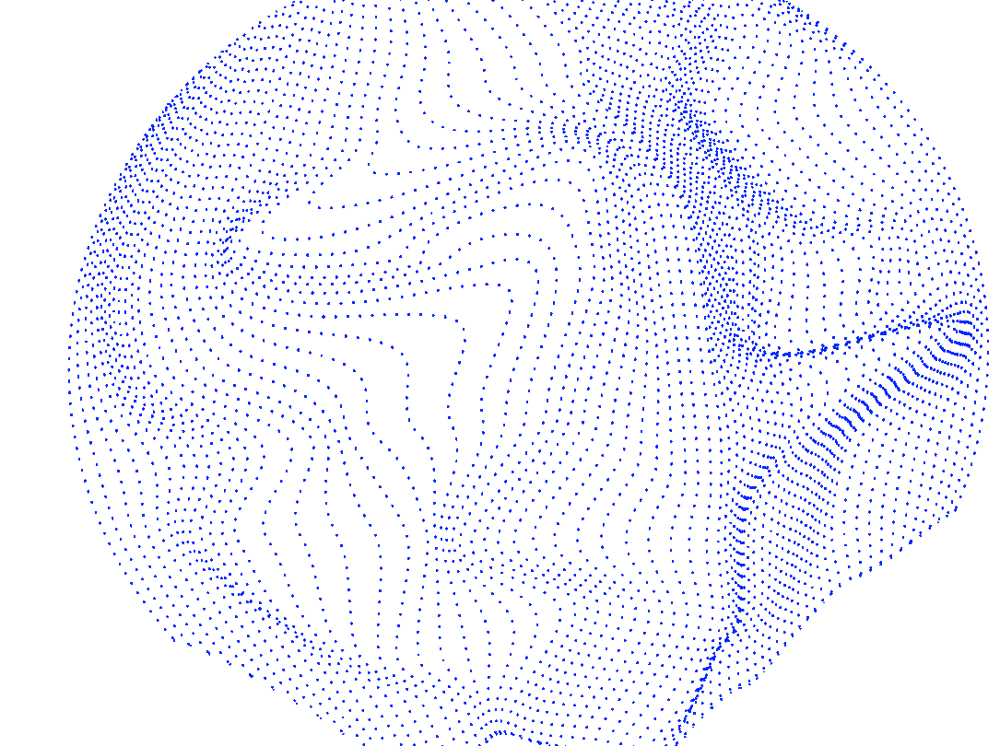

Acronyms Explained
| DL | Deep Learning |
| NLP | Natural Language Processing |
| MRI | Magnetic Resonance Imaging |
| YINS | Yale Institute of Network Sciences |
Selected Projects
Our group focuses on advancing machine learning systems to address critical challenges in their real-world deployment, such as noise, malicious exploitation, outliers, variability in objectives, privacy concerns, and fairness.  Recognizing the gap between theoretical breakthroughs and practical limitations, we strive to develop robust algorithms that scale beyond the sterile lab environment. This involves reexamining current methods under imperfect, real-world conditions and optimizing them to be adaptive and resilient. We also explore online learning in complex environments, focusing on scenarios with convex and submodular utility functions and varying levels of information, to model and optimize dynamic, evolving systems.
 In addition to foundational machine learning, our research spans several key areas. We leverage advanced neuroimaging techniques, such as functional MRI, to study brain function and its link to behavior, creating data-driven machine learning tools to analyze spatially and temporally complex data.
We also tackle combinatorial optimization problems, designing scalable algorithms for discrete decision-making tasks across diverse domains.
Furthermore, we emphasize interactive decision-making systems, developing adaptive algorithms for human-in-the-loop scenarios like recommender systems. Our proprietary Robust Intelligence platform strengthens AI applications by exposing vulnerabilities through algorithmic red teaming, threat intelligence, and policy mappings, ensuring continuous improvement of AI validation and protection technologies.
In addition to foundational machine learning, our research spans several key areas. We leverage advanced neuroimaging techniques, such as functional MRI, to study brain function and its link to behavior, creating data-driven machine learning tools to analyze spatially and temporally complex data.
We also tackle combinatorial optimization problems, designing scalable algorithms for discrete decision-making tasks across diverse domains.
Furthermore, we emphasize interactive decision-making systems, developing adaptive algorithms for human-in-the-loop scenarios like recommender systems. Our proprietary Robust Intelligence platform strengthens AI applications by exposing vulnerabilities through algorithmic red teaming, threat intelligence, and policy mappings, ensuring continuous improvement of AI validation and protection technologies.
Some of my projects are:
| Title | Institution | Topic | Info |
|---|---|---|---|
| Trustworthy ML & Robust Statistics | Yale University | AI for AF Prediction | |
|
|
Research Interests
We are broadly interested in advancing machine learning systems, predictive modeling, data-driven methods, and precision medicine. Our work addresses real-world challenges and aims to bridge the gap between theoretical breakthroughs and practical applications. Key areas of focus include:

| - | Robust Machine Learning in Real-World Systems |
| - | Optimization in Dynamic and Evolving Systems |
| - | Data-Driven Neuroimaging Analysis |
| - | Scalable Combinatorial Optimization |
| - | Interactive and Adaptive Decision-Making Systems |
| - | AI Vulnerability Detection and Protection |
Honors and Scholarships
| Year | Award | Awardee | Details |
|---|---|---|---|
| 2022 | Best Paper Award | Qinghao Liang | Graphs in Biomedical Imaging, MICCAI (url) |